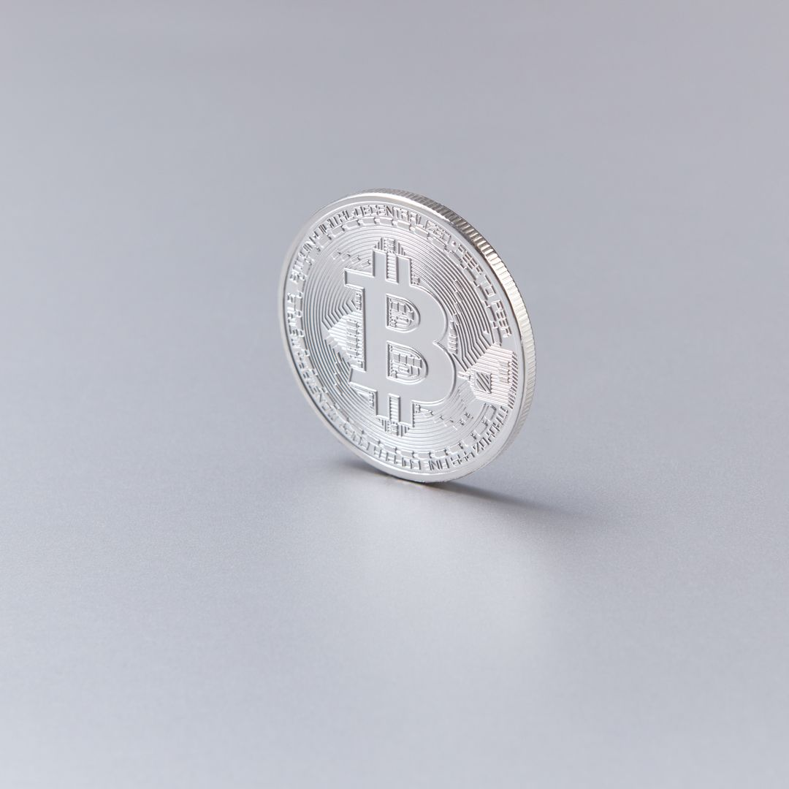
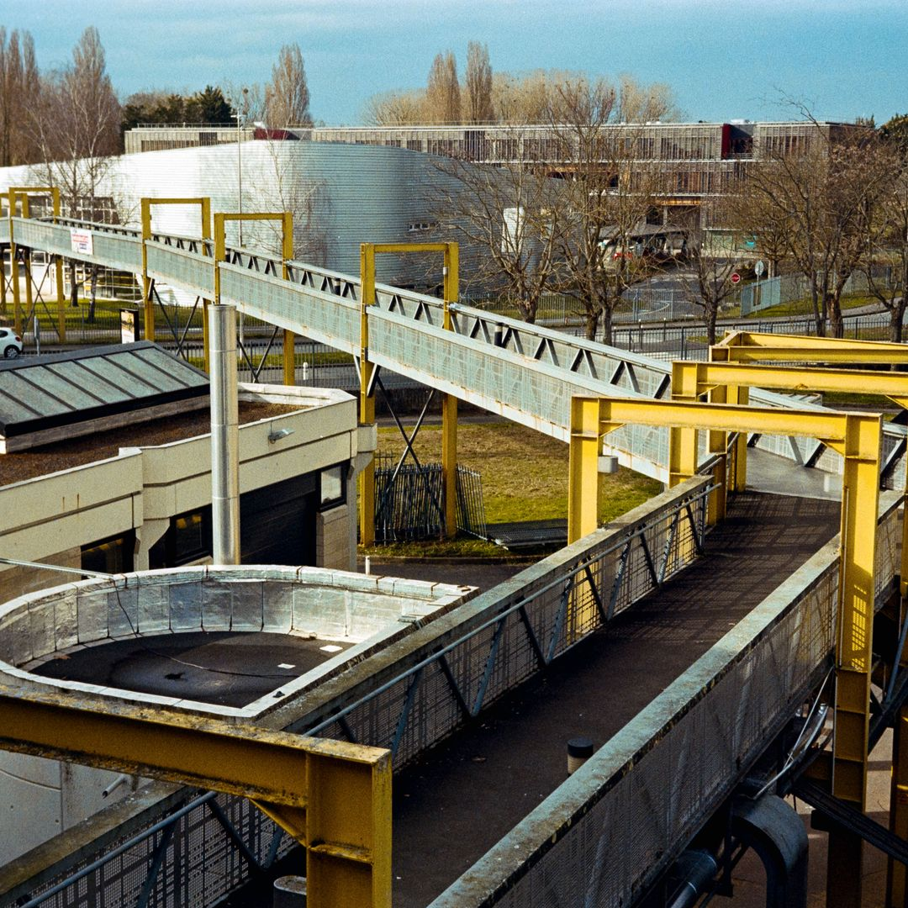
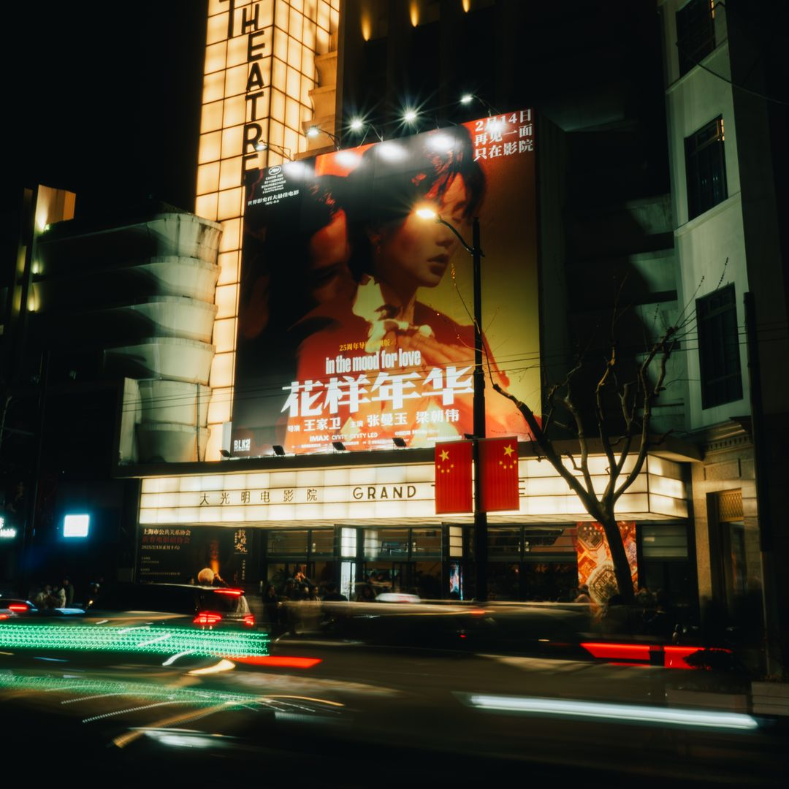

Every day, one story, three scenarios
Every day, Scénario takes one key story and lays out three possible outcomes, each with a numbered probability.
The latest edition

Is Bitcoin on track to become a benchmark institutional asset, or does its adoption remain a concentrated and fragile phenomenon?
Previous editions


Stay connected
Every day, a poll on our Telegram channel: vote for the scenario you think is most likely before you even see the real probabilities above.
Find us also across all our channels: